Zur Startseite
Zur Navigation springen
Zum Inhalt springen
Login / Lernen
Registrieren
Shop
Warenkorb
Über quowadis
Über das quowadis-Team
Häufig Gefragt (FAQ)
Impressum
quowadis-blog
AGB und Nutzungsbedingungen
Datenschutz
quowadis Krimi
Die Anatomie der Sache
EuerFeedback
Bodybit
Start
Muskeltabellen
Klinikbezug
IMPP-relevant
Body Bits
Glanzlichter
Lernatlas
Kapitel 1
Kapitel 2
Kapitel 3
Kapitel 4
Bauchsitus
Retro- und Beckensitus
Allgemein (9)
Niere (14)
Harnwege (13)
Beckeninhalt (10)
Innere weibliche Organe (19)
Innere männliche Organe (17)
Beckenboden (12)
Äußere Geschlechtsorgane (14)
Kapitel 5
Leitungsbahnen
Organsteckbriefe
Prüfung
Lernempfehlungen
gefundene Suchergebnisse
schliessen
Kapitel 4 >
Retro- und Beckensitus
Allgemein
Inhalt des Retroperitoneums
Retro- und Beckensitus:
Lymphatisches System
Retro- und Beckensitus:
Lymphstämme
Retro- und Beckensitus:
Aorta abdominalis
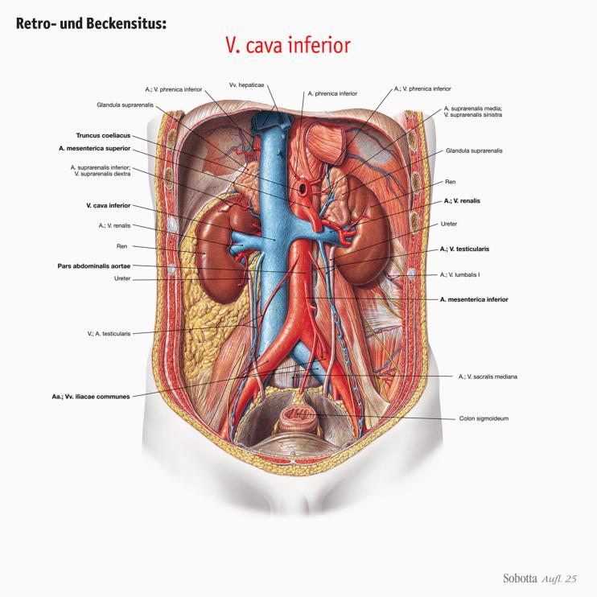
Retro- und Beckensitus:
V. cava inferior
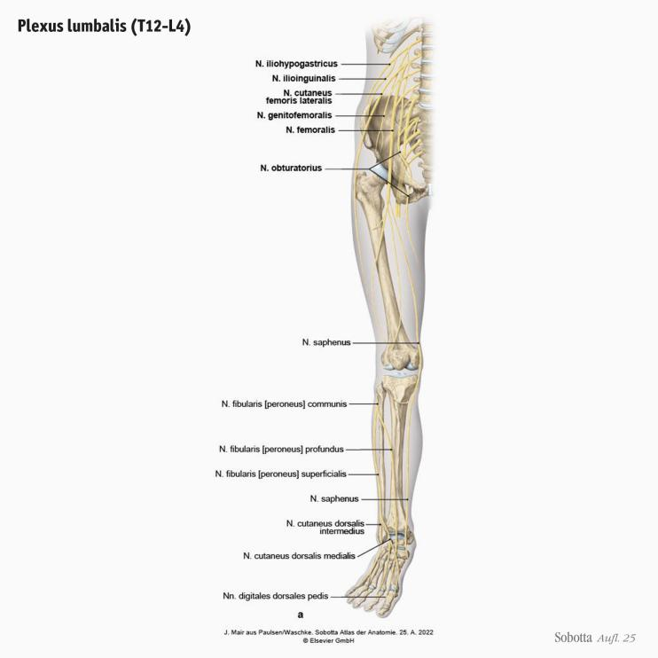
Plexus lumbalis (T12-L4)
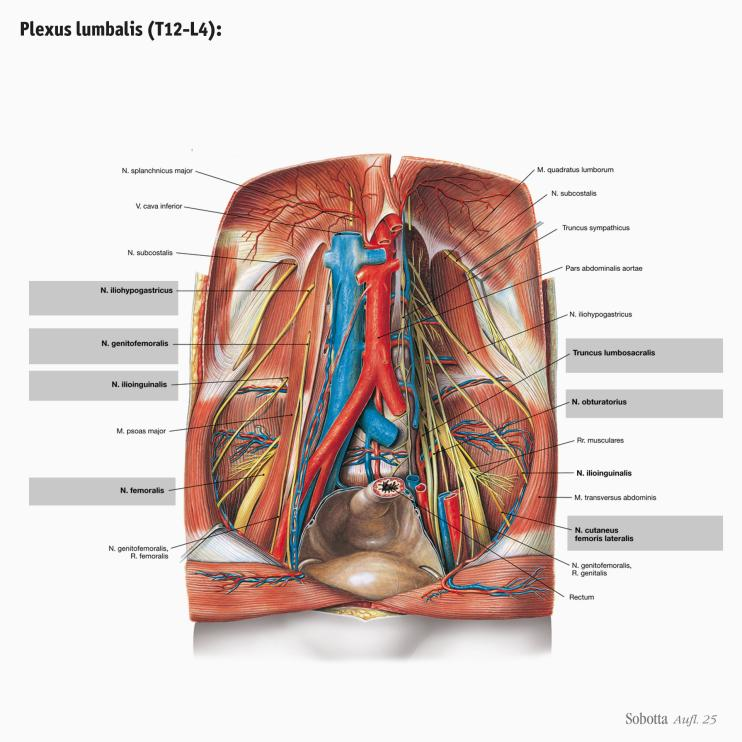
Plexus lumbalis (T12-L4):
Topographie
Plexus sacralis (L4-S5, Co1)
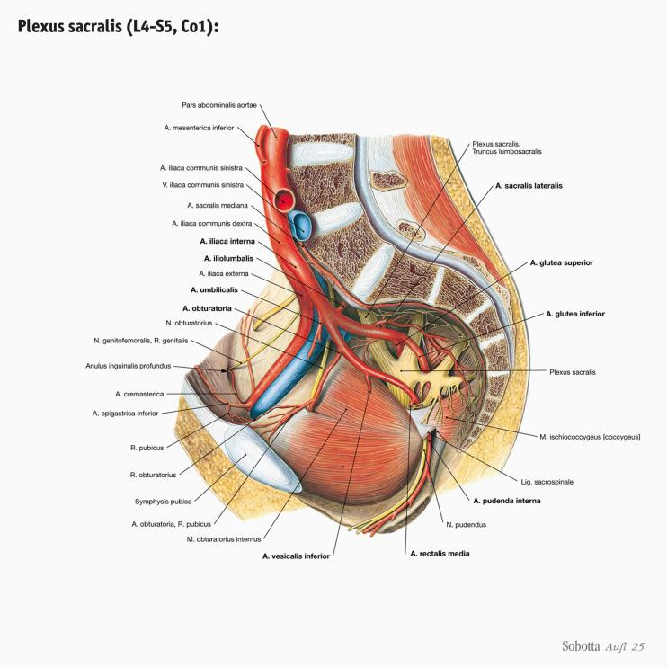
Plexus sacralis (L4-S5, Co1):
Topographie
Niere
Ren , Glandula Suprarenalis
Niere und Nebenniere
Niere (Ren):
Faszie und Kapsel
Niere (Ren):
Kontaktflächen der Nieren-Vorderseite (1)
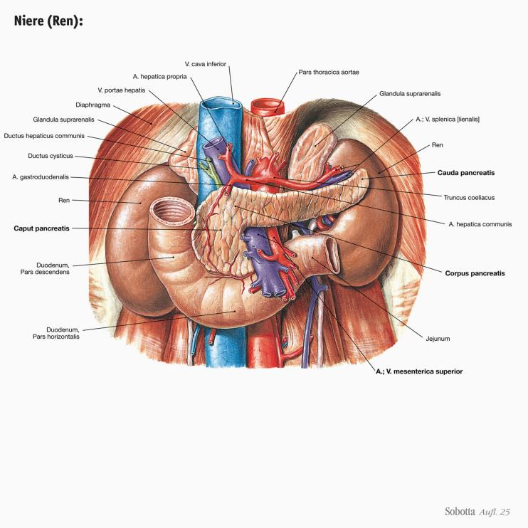
Niere (Ren):
Kontaktflächen der Nieren-Vorderseite (2)
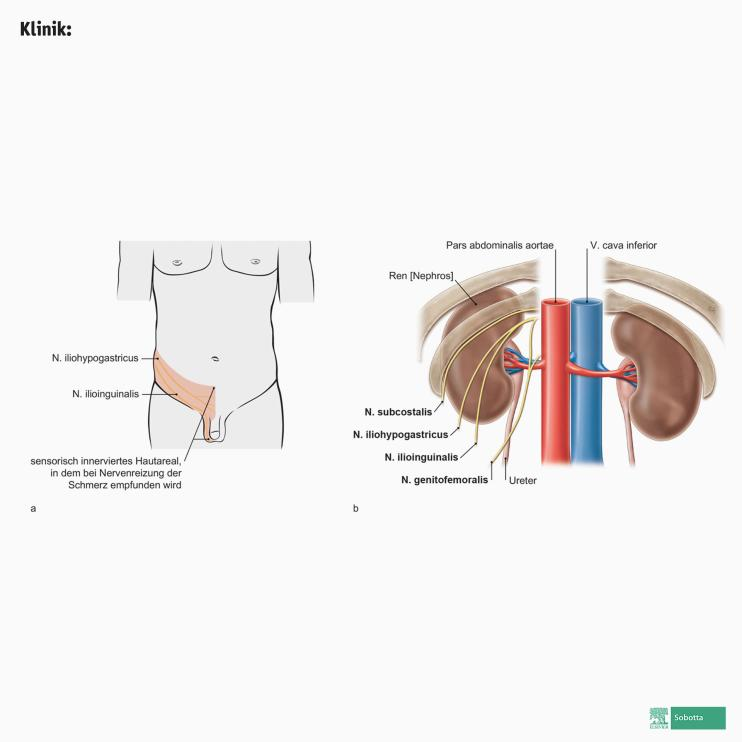
Klinik:
Kontaktflächen der Nierenrückseite
Niere (Ren):
Entwicklung (1)
Niere (Ren):
Entwicklung (2)
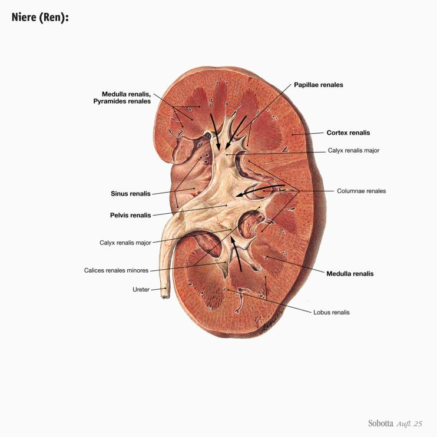
Niere (Ren):
Aufbau
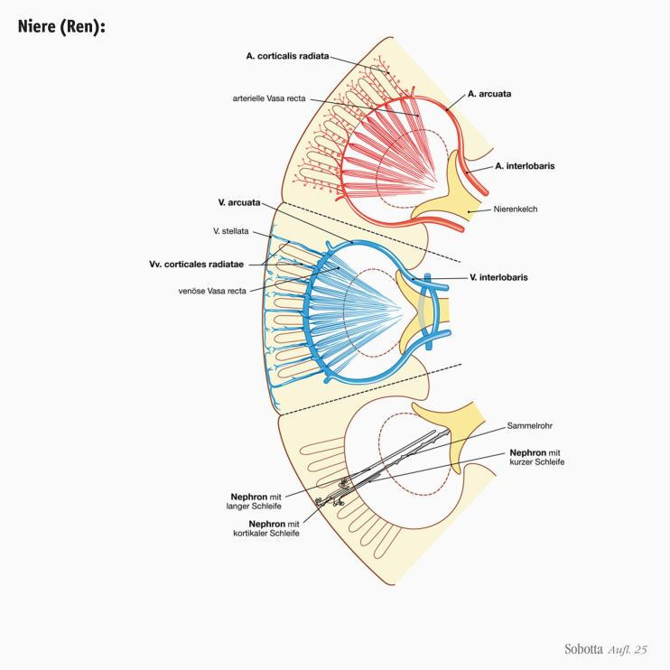
Niere (Ren):
Funktion
Nebenniere (Glandula suprarenalis):
Entwicklung und Funktion
Niere und Nebenniere:
Gefäße
Akzessorische Nierenarterien:
Relikte des Aszensus der Niere
Niere und Nebenniere:
Lymphknoten (Lnn. lumbales)
Niere und Nebenniere:
Vegetative Innervation
Harnwege
Ableitende Harnwege
Pelvis renalis
Nierenbecken
Ureter:
Abschnitte
Ureter:
Verlauf: Über-unter-Über-unter-Regel
Ureter:
Verlauf und Blutversorgung
Harnblase:
Lage
Harnblase und ableitende Harnwege
Aufbau und Leitungsbahnen
Harnblase: Bandstrukturen und Topographie
Urethra:
bei der Frau (1)
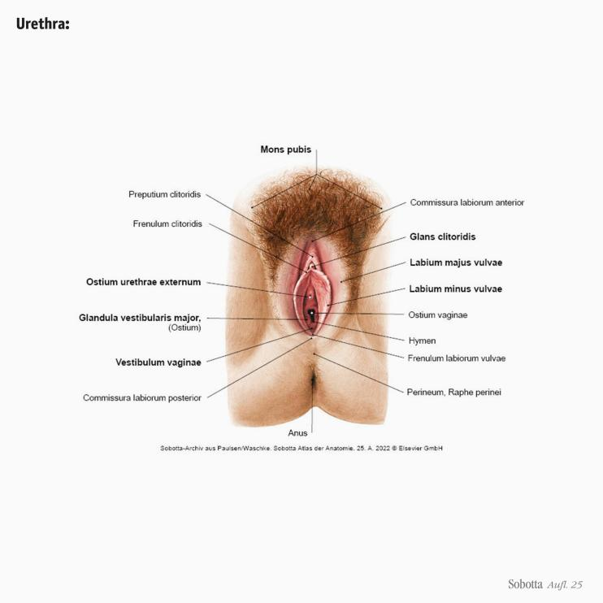
Urethra:
bei der Frau (2)
Urethra:
Beim Mann (1)
Urethra:
beim Mann
Verschluss der Harnblase und Miktion
Beckeninhalt
Beckeninhalt:
bei der Frau
Etagen des Beckens
DOUGLAS-Raum: tiefster Raum der Bauchhöhle bei der Frau
Beckeninhalt:
beim Mann
Excavatio rectovesicalis:
tiefster Raum der Bauchhöhle beim Mann
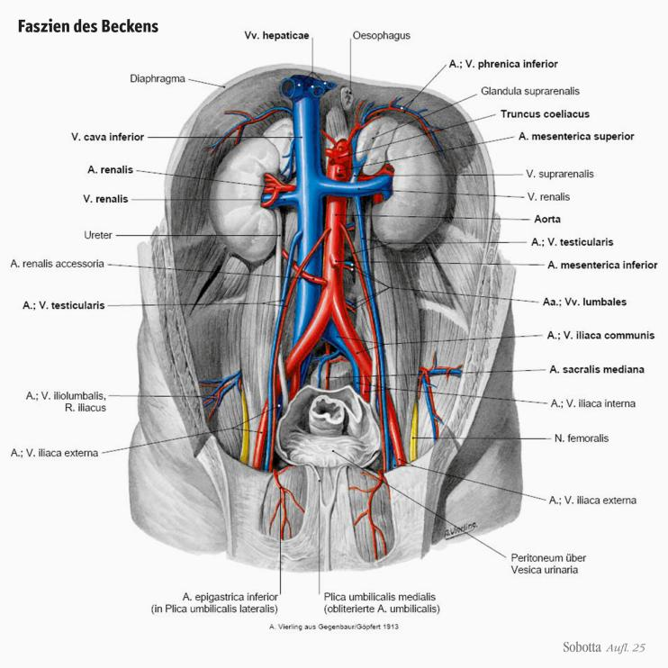
Faszien des Beckens
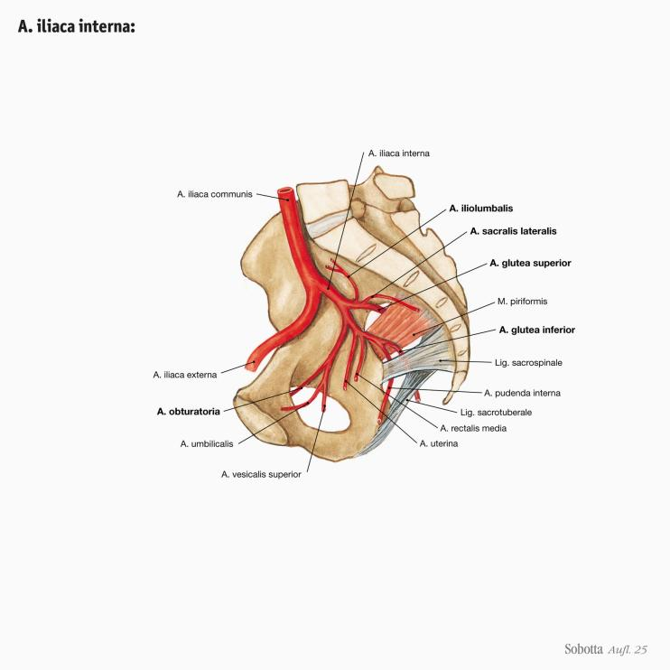
A. iliaca interna:
parietale Äste (1)
A. iliaca interna:
parietale Äste (2)
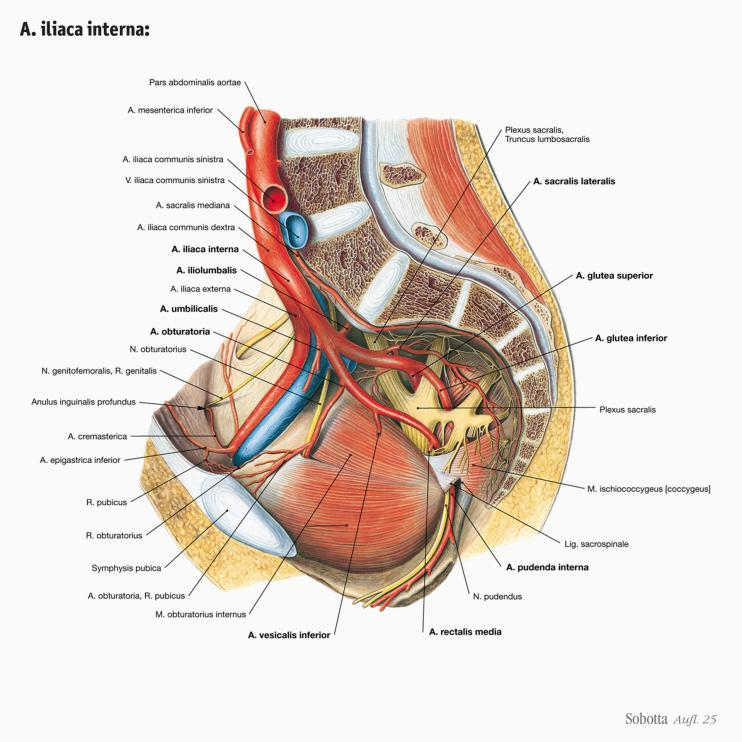
A. iliaca interna:
viszerale Äste
Arteria iliaca interna:
viszerale Äste bei der Frau
V. iliaca interna
Innere weibliche Organe
Innere weibliche Geschlechtsorgane:
Entwicklung
Innere Geschlechtsorgane:
Entwicklung (beim Mann)
Innere Geschlechtsorgane:
Entwicklung (bei der Frau)
Innere weibliche Geschlechtsorgane:
Funktion
Innere weibliche Geschlechtsorgane:
in situ (1)
Innere weibliche Geschlechtsorgane:
in situ (2)
Innere weibliche Geschlechtsorgane:
Peritonealduplikaturen
Innere weibliche Geschlechtsorgane:
Fixierungsbänder und Bindegewebsräume des Uterus
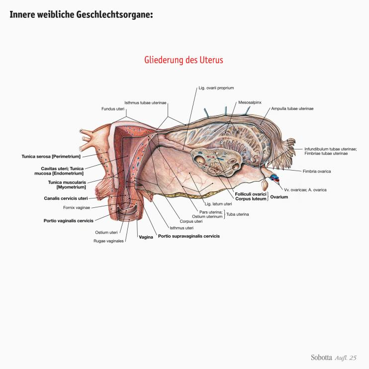
Innere weibliche Geschlechtsorgane:
Gliederung des Uterus
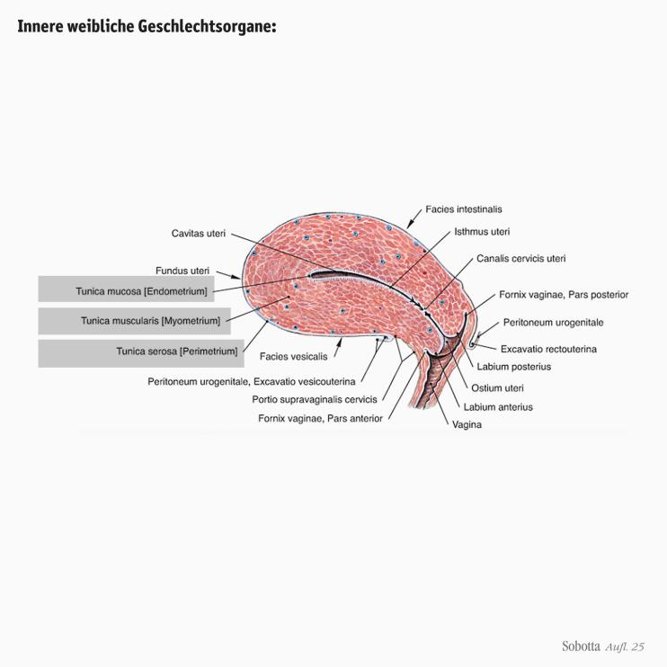
Innere weibliche Geschlechtsorgane:
Wandbau und Aufhängebänder des Uterus
Innere weibliche Geschlechtsorgane:
Gliederung der Tuba uterina
Klinik
Vagina
Innere weibliche Geschlechtsorgane:
Lage von Uterus und Vagina
Innere weibliche Geschlechtsorgane:
Arterien
Innere weibliche Geschlechtsorgane:
Venen
Innere weibliche Geschlechtsorgane:
Lymphknoten
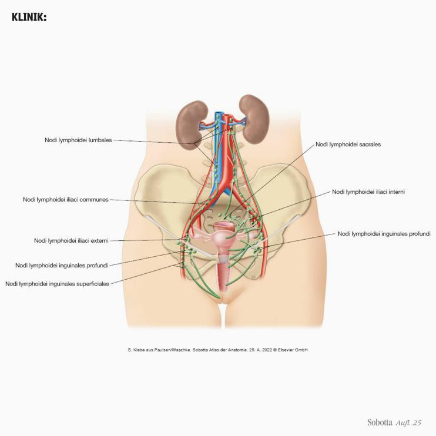
Klinik:
Metastasierung von Ovarial- und Endometriumkarzinom
Innere weibliche Geschlechtsorgane:
Innervation
Innere männliche Organe
Innere männliche Geschlechtsorgane
Innere männliche Geschlechtsorgane:
Funktion
Innere männliche Geschlechtsorgane:
Akzessorische Geschlechtsdrüsen (1)
Innere männliche Geschlechtsorgane:
Akzessorische Geschlechtsdrüsen (2)
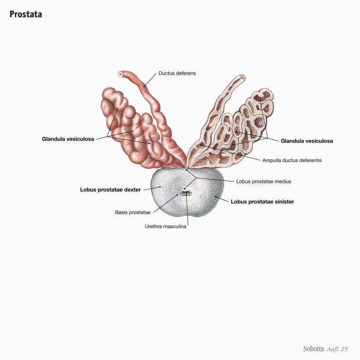
Prostata
Prostata:
Zonen
Klinik:
Untersuchung
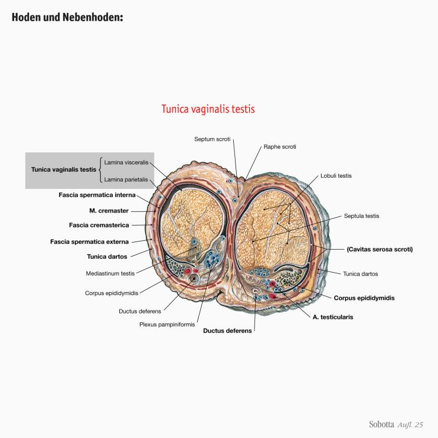
Hoden und Nebenhoden:
Tunica vaginalis testis
Hoden und Nebenhoden
Hoden und Nebenhoden:
Nebenhodengang
Hoden und Nebenhoden:
Ductus deferens
Samenstrang:
Aufbau
Samenstrang:
Inhalt
Innere männliche Geschlechtsorgane:
Blutgefäße
Innere männliche Geschlechtsorgane:
Lymphknoten
Klinik:
Hoden-Karzinom
Innere männliche Geschlechtsorgane:
Innervation
Beckenboden
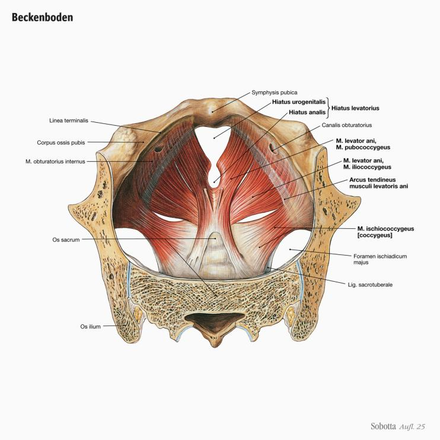
Beckenboden
Diaphragma pelvis:
Muskeln
Beckenboden:
in situ
Damm-Muskulatur:
beim Mann
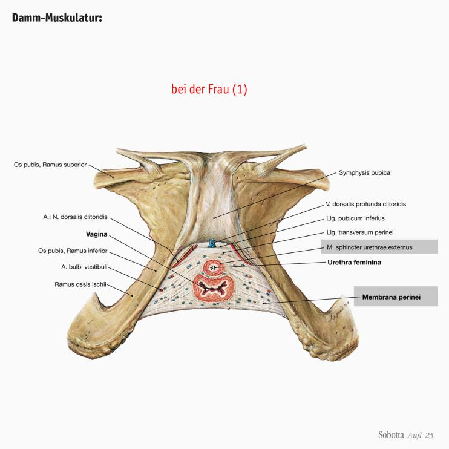
Damm-Muskulatur:
bei der Frau (1)
Damm-Muskulatur:
bei der Frau (2)
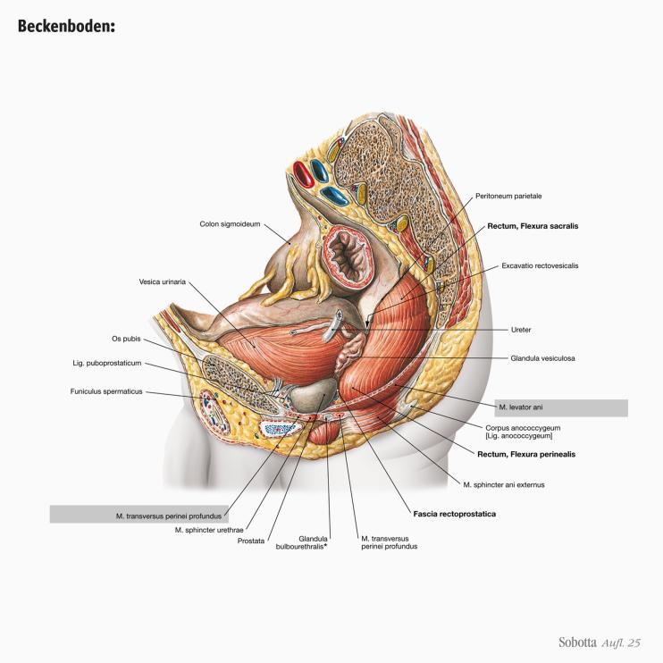
Beckenboden:
Funktion
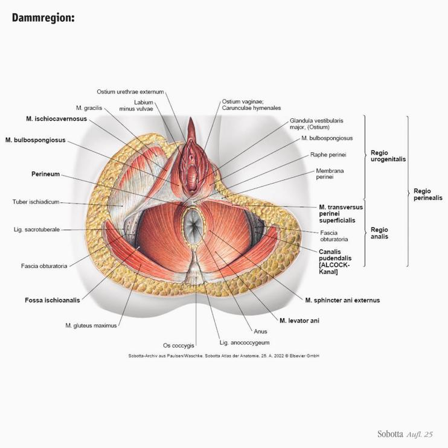
Dammregion:
Regio perinealis
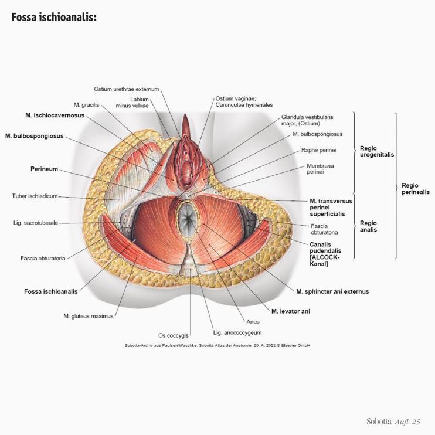
Fossa ischioanalis:
Begrenzungen und Inhalt
Dammräume:
beim Mann
Dammräume:
bei der Frau
Dammräume:
Inhalt
Äußere Geschlechtsorgane
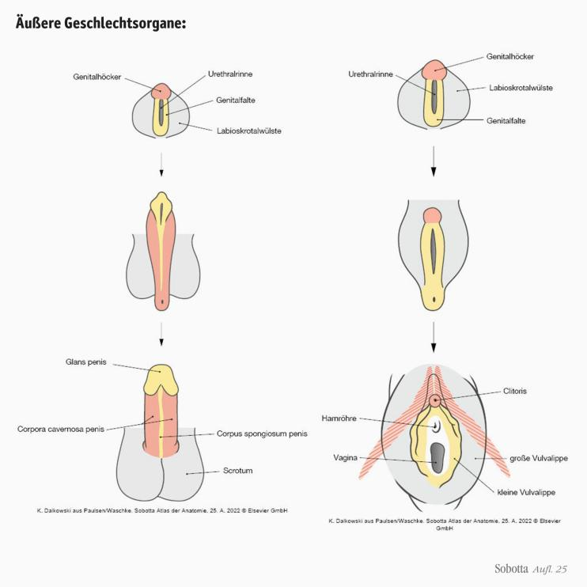
Äußere Geschlechtsorgane:
Entwicklung
Äußere Geschlechtsorgane:
bei der Frau: Vulva
Schwellkörper:
bei der Frau: Clitoris und Bulbus vestibuli
Schwellkörper:
bei der Frau: Clitoris
Vulva:
Arterien, Nerven
Vulva:
Lymphknoten
Äußere Geschlechtsorgane:
beim Mann
Äußere Geschlechtsorgane:
beim Mann: Penis (1)
Äußere Geschlechtsorgane:
beim Mann: Penis (2)
Penis:
Arterien und Venen
Penis und Scrotum:
Nerven
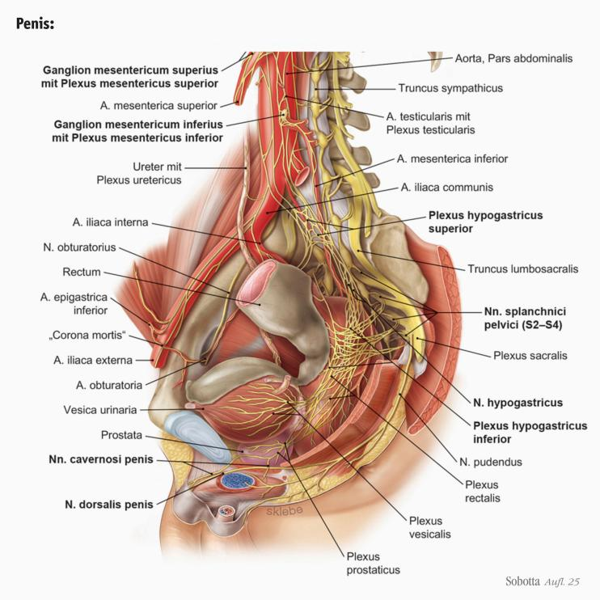
Penis:
Innervation
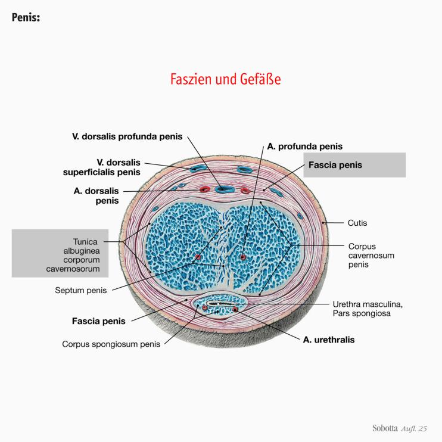
Penis:
Faszien und Gefäße
Äußere männliche Geschlechtsorgane:
Lymphknoten